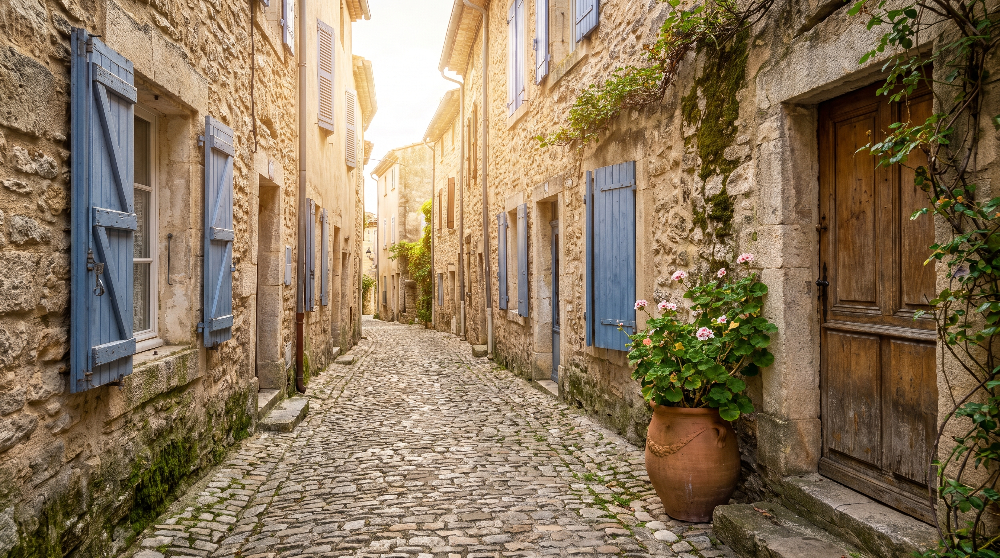
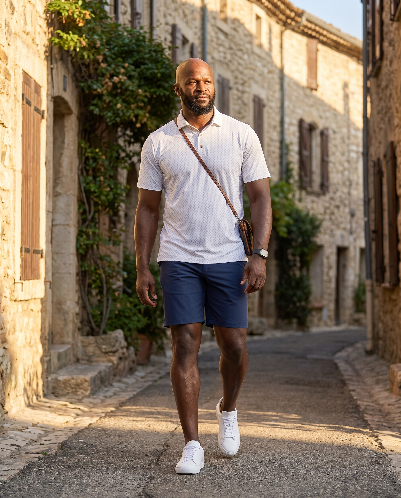
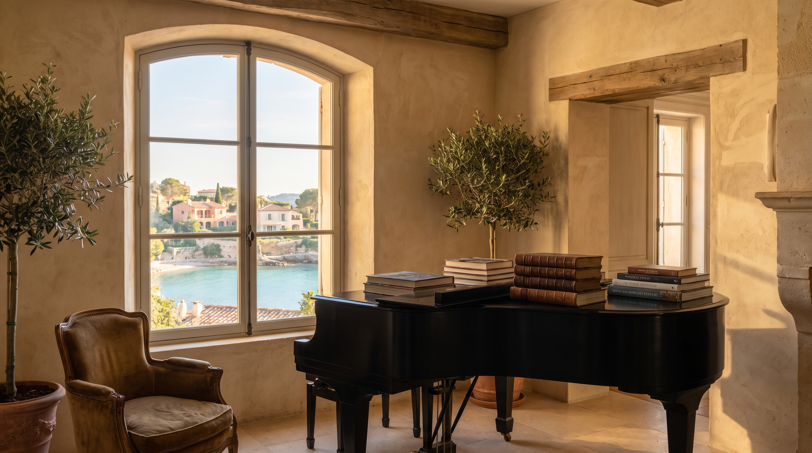
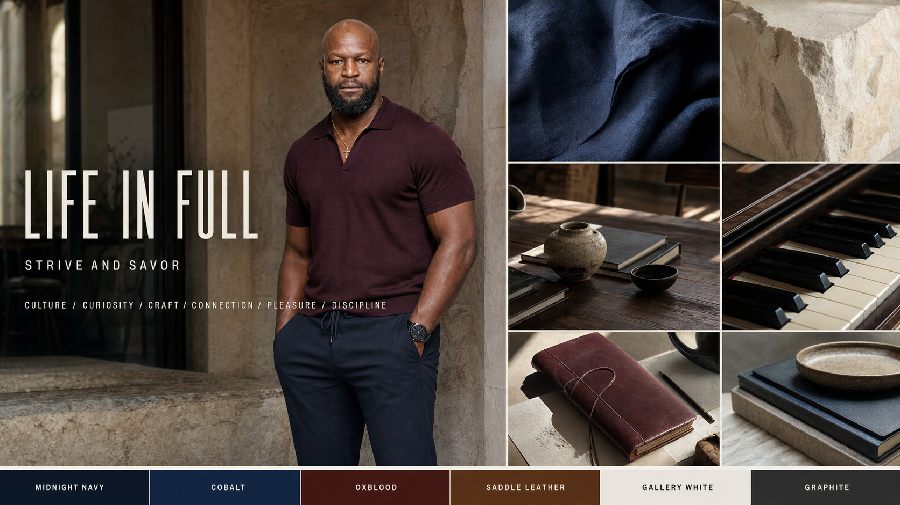
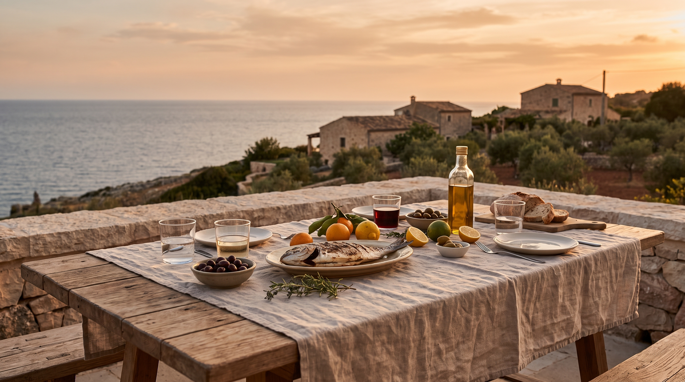
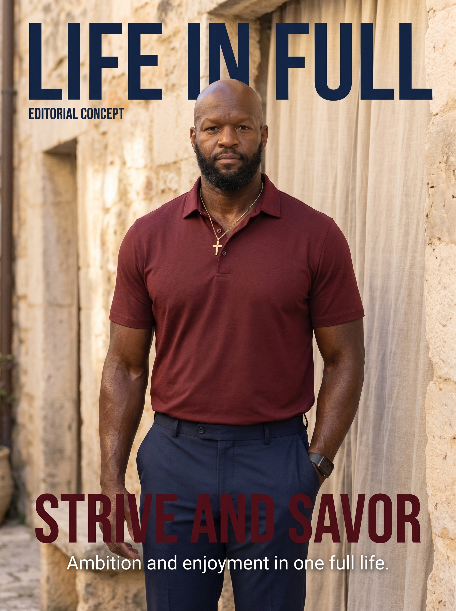
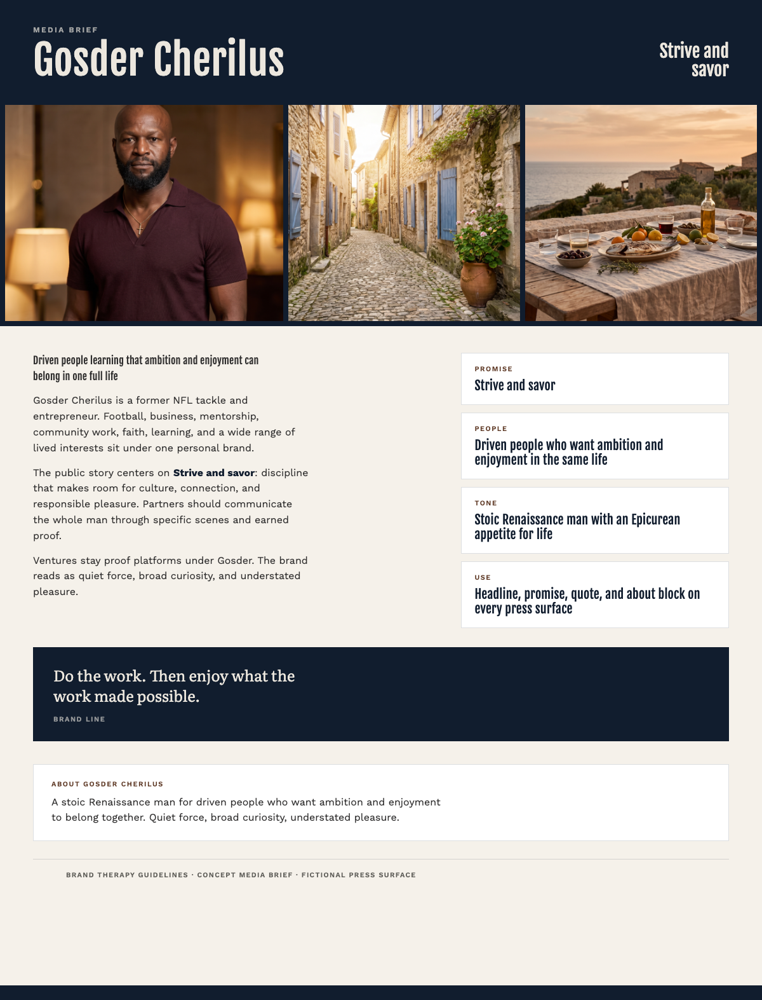

Gosder Cherilus
Your brand guidelines. Who you are, how you look, and how to speak for you.
Full brand systemThese guidelines
Read this when you write, design, or brief someone about the brand. It covers the strategy, the look, and the voice. Use the full brand system when you need every rule, asset, or file.
Focus Star
The Focus Star is the positioning system. Five lines hold the whole strategy. Every brand choice belongs in one of them. There is no sixth line.
Product
What Gosder uniquely offers
His lived example: the practice, the work, and the life it makes possible. Ventures and advice sit under that example.

People
Who he is here to serve
Entrepreneurs, athletes, builders, and committed people under pressure they chose. They need a tribe that understands the drive and makes room to enjoy life without guilt.
Persona · the person we write for
The audience member we keep in mind when we write and design: a capable adult whose chosen ambition creates pressure, responsibility, and a need for peers who understand both the cost and the pleasure of achievement.
Purpose
Why the work needs to exist
Mentorship, access, community, and practical support that give other people a real chance to move forward.

Promise
What people can consistently expect
Work with devotion. Enjoy without guilt. That pairing is the Brand DNA. Both halves stay visible in every story.

Personality
How the brand should feel and behave
Quiet force, broad curiosity, understated pleasure. Calm under pressure. Serious about standards. Warm and playful up close. Restrained in public.
Brand Personality Archetype
The roles the brand naturally embodies. Hero leads. Sage and Explorer complete the read.
Creative direction
Lean into these poles when you make creative choices.
Youthful styling, loud performance, showy luxury, abstract decoration, energetic spectacle, emotional theater
KeywordsHumble. Determined. Resilient. Serious. Mature. Curious. Cultured
Through-line
Every story, image, and partnership should hold both halves: the work and what the work makes possible. Both halves complete the brand.

Creative direction · Life in Full
Color
The palette comes from Life in Full: navy for structure and calm, deep red for warmth and gravity, warm brown for material moments, off-white for open paper. The read should feel quiet and cultivated.
Type
Fjalla One carries short direct headlines. Work Sans keeps body copy calm and readable. Literata adds a warmer line when a sentence needs more human tone. Three families only.
Strive and savor
A full life can hold discipline, curiosity, culture, connection, and responsible enjoyment at the same time.
Do the work. Then enjoy what the work made possible.
Imagery
Images are chosen to show a lived, cultivated life: local light, purposeful rooms, music, books, shared tables, and calm presence. Faces stay whole in the frame. One dominant image per surface.

Likeness
AI-generated faces and images show what the brand can look and feel like. They get as close as current tools allow, and the tools keep improving. Exact facial reproduction is not the product. A real photo shoot can be a strong next step when you want that level of fidelity.
In the world
A fictional editorial cover owned by Gosder. Treat it as a concept surface for the Life in Full world.

Press
A media brief with headline, promise, quote, and about block. Use this structure when partners need the story in one page.

Voice
For press and partners
Next
These pages are the short guide. Open the full brand system for every rule, asset, and file.